Silicious Fossils
Created Sunday 19 December 2021
@GEOLOGY @YEAR3 @PALAEOECOLOGY
@Radiolarians are unicellular @eukaryotes or @protazoans with porous shells made of silica.
Reproduced asexually
0.1-0.2mm
Lots of @vacuoles to keep the organism boyant
@Symbiotic relationship with @Zooanthella @Alage where the algae produces the energy for the radiolarian
Around from @cambrian to present

Image is a GIF (open attachment to see)
Found in @upwelling_zones which are rich in nutrients and silics and tropical waters.
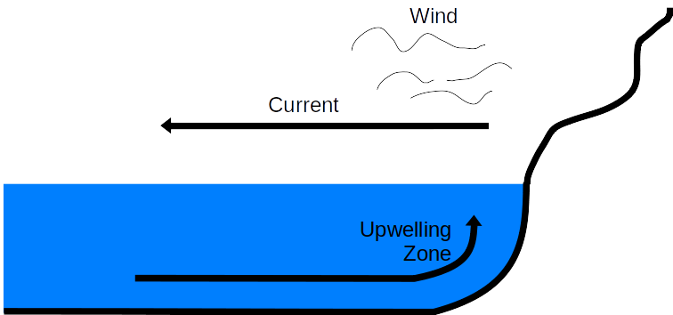
@Ordo_Spumellaria have spines and radial bars. They form colonies, have @Symbiotic relationships, and are found in the upper water column
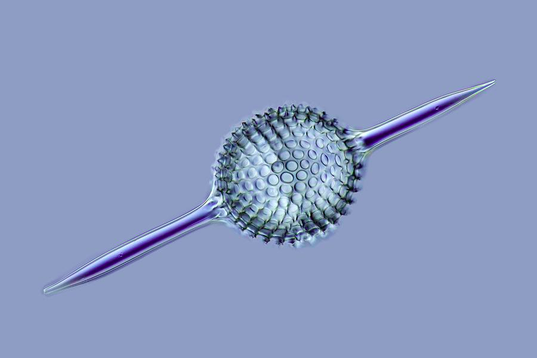
@Ordo_nasseuaria are more elongated and conical. Found from @permian to pressent. They don't have @Symbiotic relationships and are found in deeper water.
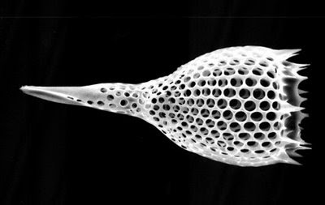
Radiolarian sediment
Seawater is @Silica_undersaturated → Silica dissolves when the radiolarians die
Rapid sinking in groups means that they are well presrved in @radiolarian_ooze which accumulates below the @calcite_compensation_depth
@Radiolarite is a rock made of radiolarians
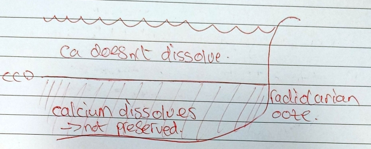
Diatoms
Single celled eukaryotic @photophytes (@autotrophic ≠ @heterotrophic radiolarians)
10-100 μm
Live in fresh, @brackish and salt water, in soil and in upwelling zones
@Jurassic - present
Come in lots of different shapes
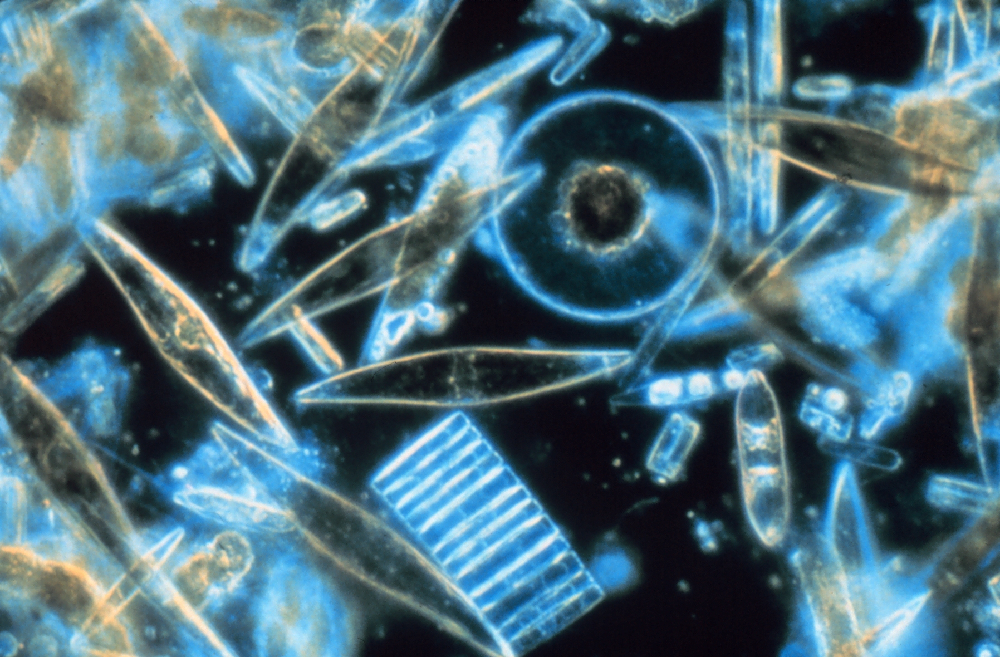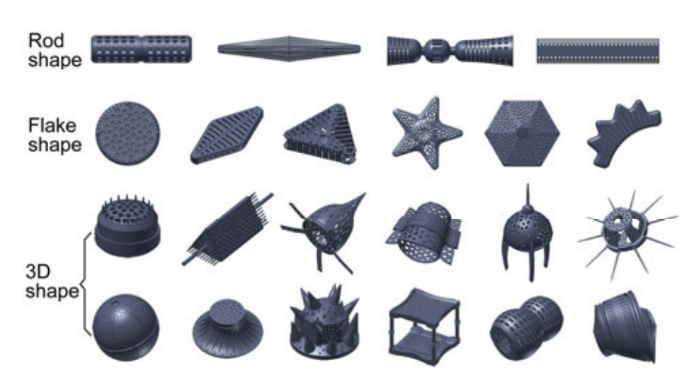
Useful for palaeoclimateology because they are sensitive to pollution
Also used for stabalising dynamite in the form of @diatomite (see https://en.wikipedia.org/wiki/Dynamite#History)
And as an @insecticide
Foraminifera
Very diverse unicellular eukaryotic @heterotrophic protazoans with a Calcium shell.
Live in freshwater but not preserved in the record.
Can be split into @planktic (live on the ocean floor) and @benthic (live in the water column)
Wall structure
@Agglutenated_forminifera collect minerals from their environment adn sticks them together to build a shell
@Percelaneous_foraminifera are not porous at all and have shells like china
@Microgranular_foraminifera have shells made of small crystals in lines
They can have one or many chambers which can be @sac or @globulose
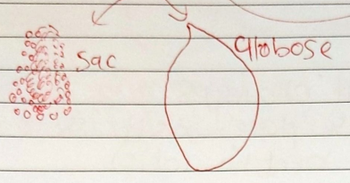
Snail shaped formaminifera have two chambers
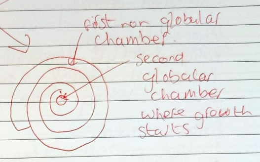
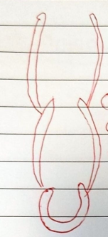Chambers can have @multilaminar_walls
@Planisperal foraminifera can be split into 3 groups:
- @Evolut where you can see the whole coil
- 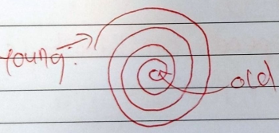
- @Involut where the youngest coil covers the older ones and you can't see them anymore.
- @Trochspiral
Application of foraminifera
Widespread globally
Useful for @biostratigraphy and palaeoecology
@Palaeobathymetry (how close somewhere was to the shore line, using the @planktonic_benthic_ratio )
Palaeocurrents
@isotope geochemistry
@Palaeobiogeography
Ostracods
Means 'seed shrimp'
> 50,000 kinds
~1mm long but their size depends on ther lifetyle and @sexual_diamorphism (the females are bigger)
@Ornamentation is varied, but often includes spikes
2 shells like a bivalve
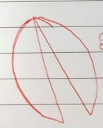
They can be elongated or bean shaped
Ostracod ontogeny
@ontogeny is the study of an organisms development
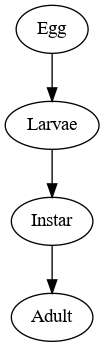
@Instar is a developmental stage before sexual maturity where the @ostracods moult their shells 8 times and grow a bigger one.
Collecting ostracod samples
Need ~500g
| Material | Acid | Concentration |
|---|---|---|
| Loose rocks | H2O2 | 15% |
| Calcareous | Acetic | 97-100% |
| Silicious | HCl or acetic acid | Dilute |
@pelagic ostracods have organic shells → not preserved ≠ @benthic ostracods which are.
@Phychrospheric ostracods live in 4°-6° water >500m deep and are blind.
@Thermospheric live in shallow and warm seas and can see.